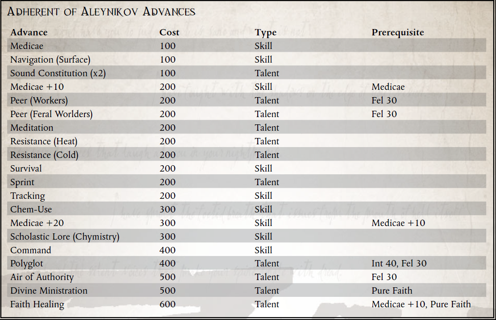

“她不会放弃，在金王座前，我们也不会！”
——赛斯神父，赛斯的领袖，第 17 次神圣光辉代表团前往 Vaporius 的领袖
Koronus Expanse 是一个无情和严酷的地方，苦难和不公正盛行。殖民者通常认为灾难会发生，而很少考虑受影响的人。饥荒、瘟疫、亚空间风暴和游荡的海盗团伙都可能毫无预兆地袭击，其中任何一种都可能对社区造成毁灭性打击。值得庆幸的是，有一些勇敢的团体会利用他们的专业知识和有限的资源提供帮助。
Aleynikov 的追随者就是这样一支组织松散的巡回传教士团体，他们继续传播着名传教士 Nadine Aleynikov 的信息。虽然她走了，但她简单的信念和成功的影响了她接触的这么多人，使她成为了许多人的英雄。尽管该地区腐败的贵族尽了最大的努力，但她成功地振兴了马尔莫尔系统的信仰，使她在该地区的宗教史上获得了永久的地位。她为消灭最终夺去她生命的瘟疫而进行的最后审判的故事对许多帝国信条的信徒具有相当大的象征意义。在浩瀚无垠、卡利西斯星区甚至更远的地方，她的名字是面对无懈可击的困难时信念和毅力的代名词。尽管不虔诚的人可能会质疑她的性格判断力和看似古怪的方法，但对于许多人来说，她仍然是希望和灵感的闪亮灯塔。
追随者的起源尚不清楚，通常情况下，归因于几个原因；空间站的幸存者，据说是他们的守护神的坟墓，她的灵感追随者，或者甚至是阿列尼科夫在她过早死亡的情况下秘密组织了追随者（根据她的历史准备记录，这似乎不太可能） .无论他们的起源如何，阿列尼科夫的信徒现在都是克罗诺斯传教圈的一个被接受的部分，即使他们没有被官方的部长令完全接受。有人说，他们获得认可只是时间问题，而另一些人则想知道，国教高层是否甚至听说过从这样一个非正统人物身上汲取灵感的边缘教派。
在他们的方法论中，追随者试图效仿阿列尼科夫的方法和动机。拥有足够的知识以自给自足是至关重要的；因此，这些人经常寻求提高他们的田野和医学知识，通过研究知识库和遥远的世界等来磨练他们的技能。追随者的目标是使自己对他们的潜在皈依者尽可能有用，因此他们通常拥有广泛的技能基础，这可能与科罗努斯广域的许多人类文化有关。
他们还不断地寻找致命的疾病进行分类，时刻注意阿列尼科夫本人的命运。无论瘟疫和其他此类灾难发生在哪里，信徒都会聚集在一起帮助受灾者。许多人保存了他们遇到的新疾病的大量目录，并在他们遇到的罕见场合与他们的同伴分享。不幸的是，由于追随者采用了半随机的旅行性质，这些会议可能很少而且相隔甚远。关于如何对抗瘟疫的重要信息可能不会报告给最需要它的人，因为个人成员的道路从未碰巧交叉。这样的问题被认为是对皇帝的考验，应该像纳丁接受她的艰辛一样由衷地接受。
追随者的另一个共同特征是对盗贼商人的健康怀疑，即使有时不是完全不信任。虽然它们通常是整个浩瀚宇宙中最有可能的交通工具，但阿伽门农昆图斯的命运很少远离追随者在寻求交通工具时的想法。有些人积极地试图颠覆 Rogue Traders，将他们的整个品种视为对人类的诅咒。就像 Aleynikov 所做的那样，他们让船员们支持他们的事业，但并不总是带着如此纯粹的意图。毕竟，剥夺一个盗贼商人的足够船员严重损害了他的船的效率。
虽然在许多情况下缺乏方向可能是一个障碍，但对于阿列尼科夫的追随者来说，这实际上是一个福音。他们的生活有意义，不受特定规则和规定的限制，灵感来自 Nadine Aleynikov 一生中的功绩故事。一些追随者可能会更专注于一个研究或服务领域而不是另一个领域，因为他们的情况决定了，但他们都有传播帝国信仰的决心。
所需职业：任何人类探险家
替代等级：1 或更高 (5,000 xp)
要求：友谊35，意志力35
其他要求：这位探险家必须花时间研究 Nadine Aleynikov 的教义，并为科罗努斯广域的受难者服务。

新天赋：信心疗愈
先决条件：Medicae，纯信仰
这位探险家的神圣热情激发了他所有盟友的信心和信任。即使在最艰难的时期，他也像帝皇之光的灯塔一样屹立不倒。
每当这位探险家成功地移除一名拥有医疗技能的盟友的伤害时，该盟友在遭遇战结束前进行的下一次测试中，以这种方式移除的每一点伤害都会获得 +5 加值（最多 +30）。